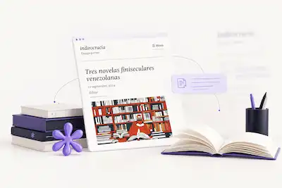
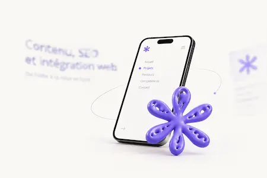
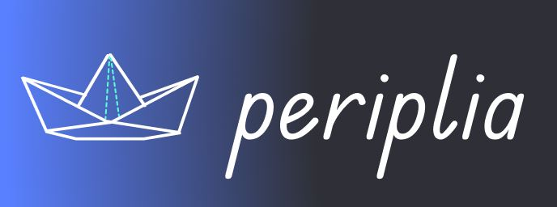
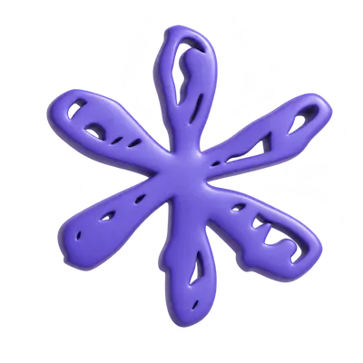

Journalisme
Dix ans de métier : veille, rédaction à la minute, médias publics et privés, jusqu'à devenir conseillère.
Observer, chercher, douter, raconter
Contenu et intégration web : de l'idée à la mise en ligne.

Refonte du site Indirocracia, journal d'expérimentation narrative en ligne depuis 2014
↗
Un portfolio one-page (une seule page, promis) écrit, dessiné et codé à la main, sans framework.
↗
Application fullstack de gestion de voyages en groupe.
↗De formation journaliste, après la rédaction et la communication, je me suis formée au développement web pour comprendre ce qui se passe derrière l'écran. Aujourd'hui, je m'occupe de tout ce qui vit en ligne dans votre projet : texte, pages, calendrier, publication.
Bref, écrire clair, construire propre, rendre accessible.
L'espagnol est ma langue maternelle, je rédige et travaille aussi en français et j'ai une compréhension professionnelle de l'anglais.
Disponible en CDI, CDD ou en freelanceDix ans de métier : veille, rédaction à la minute, médias publics et privés, jusqu'à devenir conseillère.
Observer, chercher, douter, raconter
En parallèle du journalisme : stratégie de contenus et community management au service des ONG.
Faire circuler des idées qui comptent
Une équipe de 25 personnes, plus de 1000 clients par semaine, et zéro manuel pour les imprévus.
Tenir l'équipe et la performance
Rédaction web et SEO : écrire pour rendre lisible une région lointaine.
Écrire pour être lue et pas seulement publiée
Du code, intensément : projets perso et stage.
Comprendre ce qui se passe derrière l'écran, et y créer aussi
Des endroits où ces expériences se rencontrent : le contenu et le web.
De grosses envies d'apprendre, de créer et de progresser
Articles, UX writing, newsletters
Audit, mots-clés, GEO
CMS, calendrier, workflows
HTML, CSS, JS, responsive
Wireframing, Prototypage
Agile/Scrum
Des contenus et interfaces utilisables par toutes et tous, sans barrières.
Sur ce site : navigation au clavier, focus visible, animations réduites sur demande.
Accompagner chacun·e dans l’usage des outils numériques, en expliquant simplement et en favorisant l’autonomie.
Dans mon travail : traduire le jargon technique en mots simples
Par déformation professionnelle, je suis allergique au flou et fan des deadlines (si, si). Si vous avez une idée, un brief ou juste un début de piste, envoyez-moi un message.

Éditeur : Indira Ramirez Teran
Contact : indirramirez@gmail.com
Hébergement : GitHub Pages (GitHub Inc., 88 Colin P. Kelly Jr Street, San Francisco, CA 94107, États-Unis)
Données personnelles : ce site ne collecte aucune donnée personnelle. Si vous m'écrivez par e-mail, votre adresse est utilisée uniquement pour vous répondre.
Cookies : Ce site n'utilise pas de cookies de suivi.